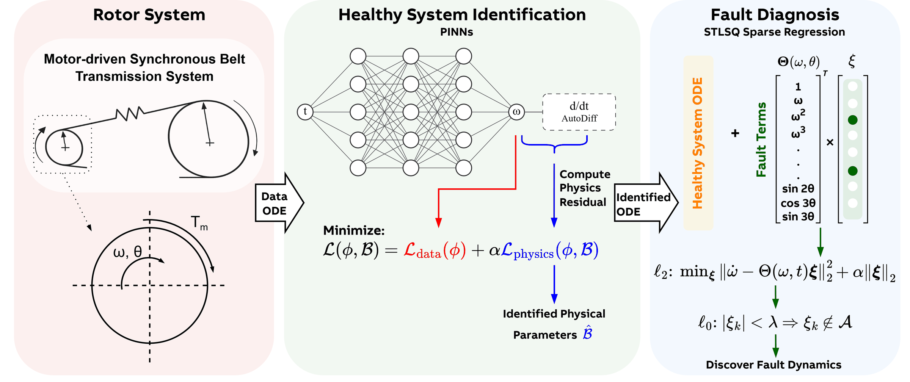
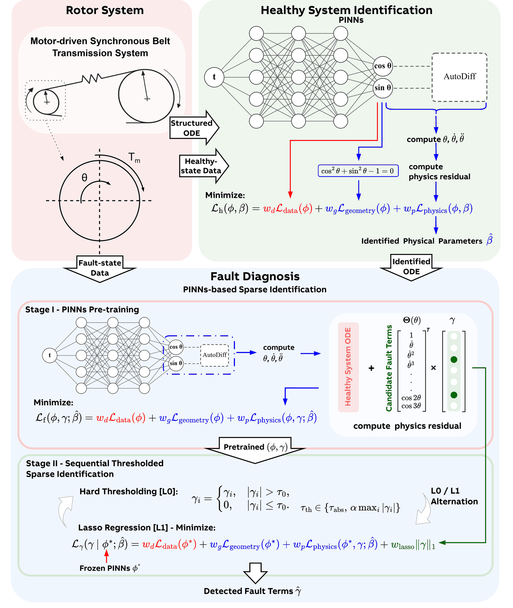
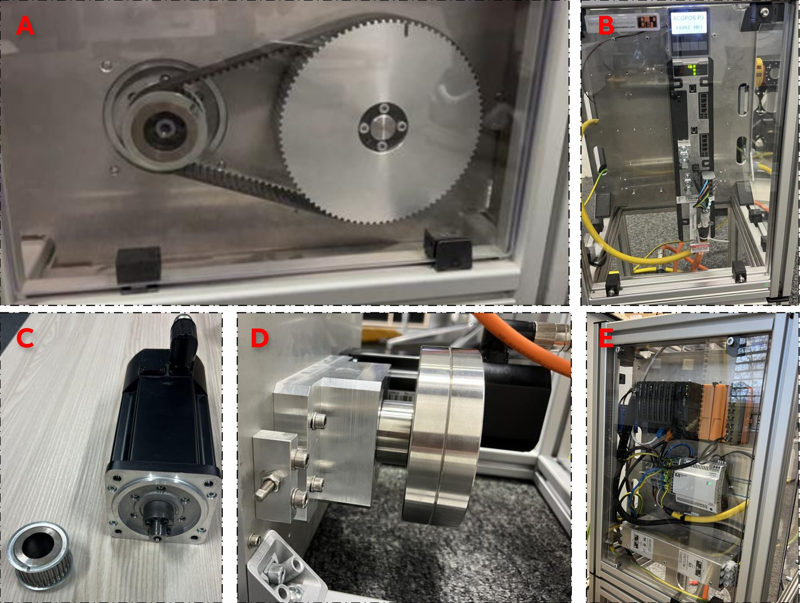

Physics-Informed Machine Learning for Interpretable Fault Diagnosis in PMSM-Driven Belt Transmission Systems
Master’s thesis · ABB Corporate Research × TUM Institute of Flight System Dynamics · 2026
Servo drives already measure motor current and rotor position. In my Master’s thesis I asked whether these signals alone are enough to diagnose mechanical faults in a motor-driven belt transmission. The goal was to detect changes in mechanical behaviour from current and encoder data and to link them to physically meaningful fault signatures, without installing extra sensors.
Both methods I developed follow the same idea. The model first learns how the healthy system behaves and then identifies the additional dynamics that a fault introduces. I started from a physical model of the rotor dynamics and used physics-informed neural networks (PINNs) to estimate the inertia and friction parameters, which define the healthy baseline. Sparse identification then selects a small number of candidate terms to explain how the measured behaviour deviates from this baseline.
The first method identifies the healthy dynamics from rotational speed. For diagnosis, it computes the residual between the measurements and the healthy model and fits it with sparse regression in a separate step. This captured the dominant fault signatures. However, the numerical differentiation it relies on amplified measurement noise, so some unnecessary terms were retained.

While finishing the first method, I saw that sparse fault identification could be built into the PINN itself, with the fault terms treated as an extension of the healthy dynamics. Healthy-system identification and fault identification would then share the same model and the same optimisation. The second method is built on this idea and works directly with the encoder angle. The network represents the angle by its sine and cosine, which avoids a jump at every full revolution. Derivatives come from automatic differentiation, and the fault terms are selected during training.

To test both methods, I designed and ran experiments on a servo-driven toothed-belt test bench with a 1:3 transmission ratio. The measurements covered healthy operation, parallel shaft misalignment and localised tooth interference, each under start–stop motions and constant-speed profiles. All identification and diagnosis used only signals from the servo drive.

For both methods, forward simulations of the healthy models stayed below 3% relative speed error on most of the 70 healthy trajectories. The two methods differed mainly in fault identification. The angle-based method kept fewer terms and gave clearer physical signatures. Tooth interference, for example, produced fractional-order harmonics associated with the slower rotation of the load-side pulley. Their link to the 1:3 transmission ratio gives the identified terms a direct physical interpretation.
The thesis combined physical modelling, machine learning and experiments to explain fault-related deviations with a few interpretable model terms. So far, the methods have only been evaluated offline on one test bench. Online monitoring and a wider range of operating conditions remain open for future work.
Master’s thesis (PDF, 11.6 MB)
Many thanks to Dr. Chen Song and Dr. Joachim Weißbacher from ABB, and to Dr. Agnes Steinert and Zoe Mbikayi, M.Sc. from the TUM Institute of Flight System Dynamics, for their guidance.